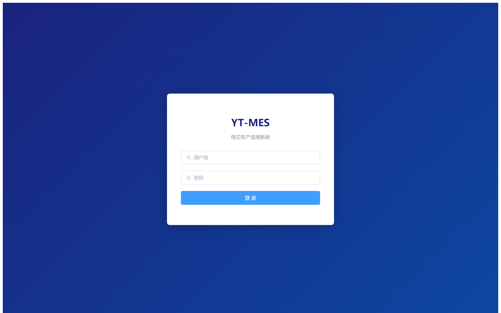
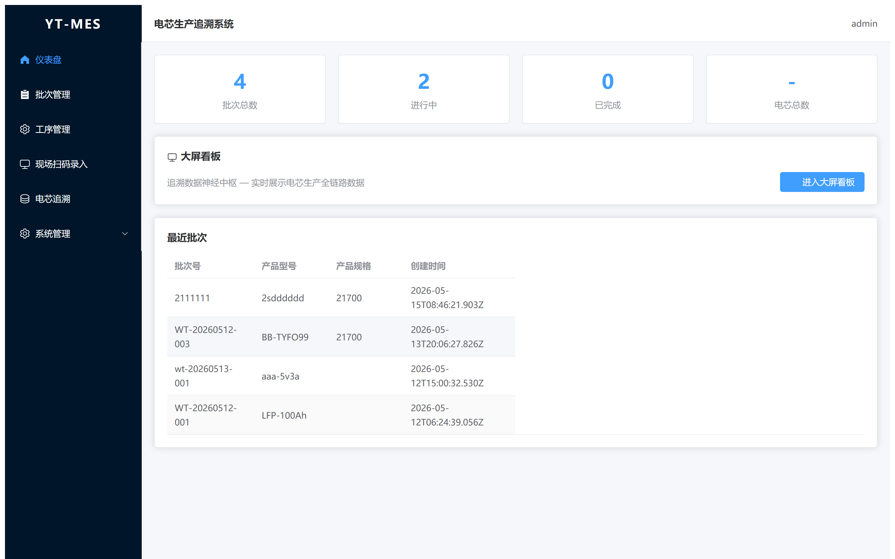
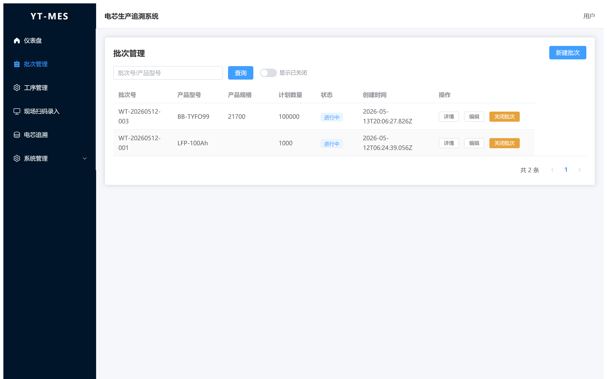
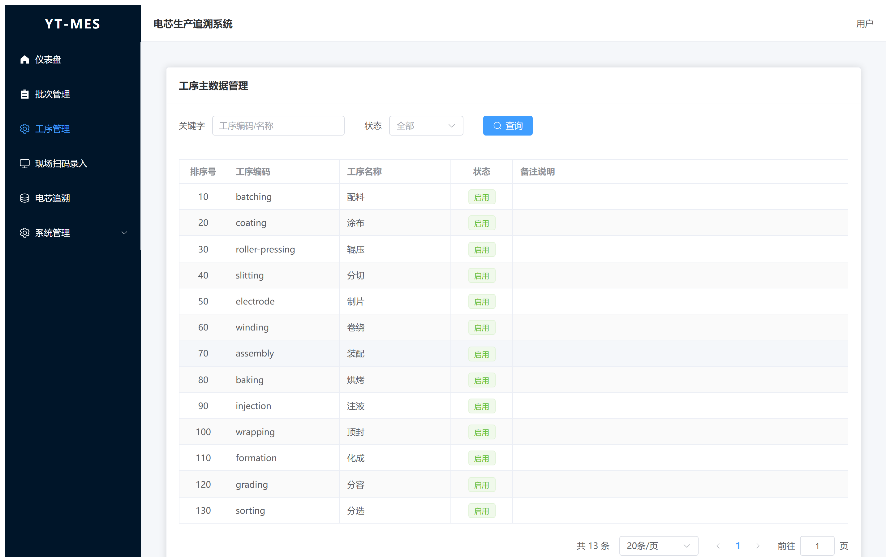
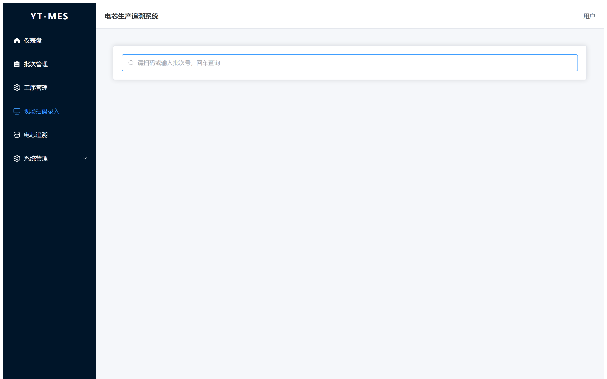
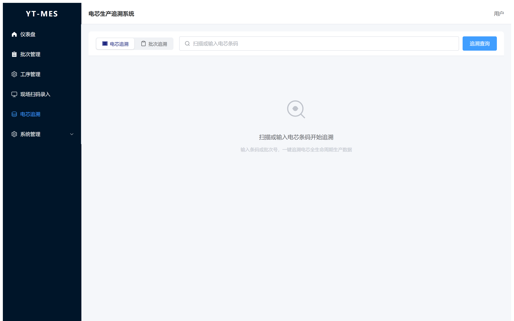
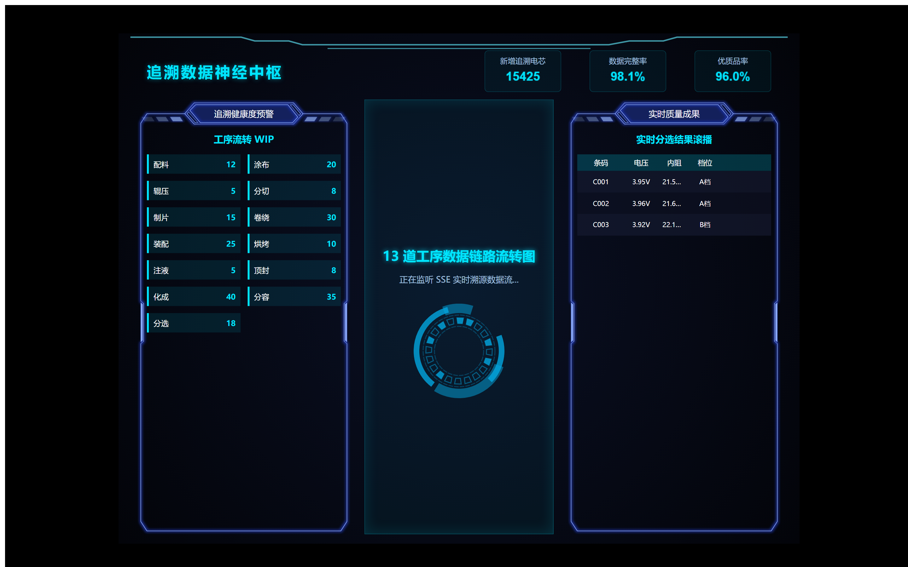
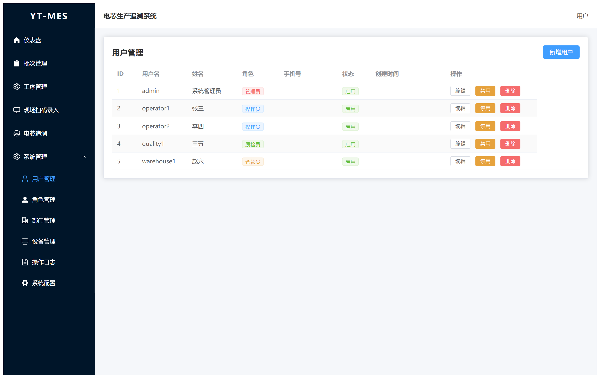

YT-MES 是一套面向锂电池电芯生产的全流程追溯系统，覆盖从原材料配料到成品分选的 13 道核心工序。
YT-MES（Yuntong Manufacturing Execution System）以批次为主线，串联电芯生产的 配料→涂布→辊压→分切→制片→卷绕→装配→烘烤→注液→顶封→化成→分容→分选共 13 道工序。 系统提供批次管理、工序维护、现场扫码录入、质量检验、原材料仓储、大屏看板以及电芯级全生命周期追溯功能。
| 功能模块 | 说明 |
|---|---|
| 批次管理 | 创建、查询、跟踪生产批次的全生命周期状态 |
| 工序管理 | 维护13道工序字典（名称、编码、排序、启停），管理员专属 |
| 现场扫码录入 | 扫码枪扫批次条码，聚合操作台中沉浸式录入各工序数据 |
| 质量检验 | 记录各工序质检结果，追踪不合格品处置 |
| 原材料仓库 | 管理正极/负极/电解液等物料的入库、领用与批次关联 |
| 电芯追溯 | 扫描电芯条码，秒级获取从原料到成品的完整生产履历 |
| 大屏看板 | 工业级数据大屏，SSE实时推送，展示13道工序数据链路 |
| 用户与权限 | 4种预设角色，页面级RBAC权限控制 |
| 分选机接口 | 硬件设备REST API，支持单条实时上传与批量表格导入 |
以下为电芯生产全流程的13道工序（按生产顺序排列）：
| 序号 | 工序名称 | 编码 | 说明 |
|---|---|---|---|
| 1 | 配料 | batching | 正负极材料的称量与混合 |
| 2 | 涂布 | coating | 浆料均匀涂覆在集流体表面 |
| 3 | 辊压 | roller-pressing | 极片辊压压实 |
| 4 | 分切 | slitting | 宽幅极片分切成窄带 |
| 5 | 制片 | electrode | 极片焊接极耳 |
| 6 | 卷绕 | winding | 正极/隔膜/负极卷绕成卷芯 |
| 7 | 装配 | assembly | 卷芯装入壳体，焊接盖板 |
| 8 | 烘烤 | baking | 真空烘烤去除水分 |
| 9 | 注液 | injection | 注入电解液 |
| 10 | 顶封 | wrapping | 外包膜热缩封装 |
| 11 | 化成 | formation | 首次充放电，形成SEI膜 |
| 12 | 分容 | grading | 容量分选与标定 |
| 13 | 分选 | sorting | 按电压/内阻/容量分选 |
了解如何登录系统，以及系统主界面的布局结构。
打开浏览器（推荐 Chrome / Edge），在地址栏输入系统地址后，将看到以下登录界面：

输入您的用户名和密码，点击"登录"按钮即可进入系统。
admin123），详见 第九章 用户与权限。登录成功后进入工作台页面。主界面分为三个区域：
工作台是登录后的首页，提供关键生产指标的一站式概览。

页面顶部展示 4 个核心统计卡片：
| 指标 | 说明 |
|---|---|
| 总批次 | 系统中所有批次的总数 |
| 进行中 | 当前状态为"进行中"的批次数量 |
| 已完成 | 当前状态为"已完成"的批次数量 |
| 已关闭 | 当前状态为"已关闭"的批次数量 |
统计卡片下方展示最近创建的批次列表，包含批次号、产品型号、状态和创建时间等信息，方便快速访问。
工作台顶部提供了跳转到"工序管理"和"批次管理"的快捷菜单入口，点击即可导航。
批次是生产管理的核心单元，批次号串联所有工序记录和电芯条码。

从左侧导航栏"批次管理"进入，您可以：
{工厂代码}{年份后两位}{月份字母}{4位随机字符}，例如 WT26A1XZ8。点击批次号进入详情页，可查看：批次基本信息、13道工序完成状态总览、已导入电芯列表、各工序快速入口。
| 状态 | 编码 | 说明 |
|---|---|---|
| 草稿 | 1 | 批次已创建，尚未开始生产 |
| 进行中 | 2 | 已有工序开始记录 |
| 已完成 | 3 | 所有工序已完成 |
| 已关闭 | 4 | 批次关闭，不可再修改 |
工序字典的集中维护中心，支持工序的增删改查、排序调整和启用/停用控制。

"工序管理"是系统的工序主数据字典。在这里您可以维护13道标准工序的名称、编码、排序号 以及启用/停用状态。工序字典中的变更是驱动"现场扫码录入"操作台的唯一数据源。
顶部搜索栏支持：按关键字（工序编码/名称模糊搜索）和状态（启用/停用）筛选。
管理员点击"新增工序"按钮，在弹窗中填写工序编码、名称、排序号和状态后保存。编辑时编码不可修改。
工序字典中的数据会实时影响"现场扫码录入"操作台——停用一个工序后，车间操作台对应的卡片将立即消失。
为车间操作人员量身打造的扫码聚合操作台，扫码即工作，零页面跳转。

操作工用扫码枪扫描批次条码 → 系统自动展开该批次的全部工序进度卡片 → 点击卡片弹出抽屉弹窗录入数据 → 关闭抽屉继续下一道工序。全程不离开当前页面。
如果扫描的批次号不存在，系统直接报错并清空输入框，不保留无效输入。
操作台加载时从"工序管理"字典中读取所有启用状态的工序并按排序号排列。管理员在工序管理中停用/启用/新增工序时，操作台同步更新。
通过电芯条码，秒级获取从原料到成品的完整生产履历。

电芯追溯是 YT-MES 的核心功能。每个电芯拥有唯一的32位条码，系统记录该电芯从配料到分选全部13道工序的生产数据。
| 方式 | 操作 | 结果 |
|---|---|---|
| 按条码搜索 | 输入或扫描32位电芯条码 | 展示该电芯的全部工序数据、KPI参数 |
| 按批次搜索 | 输入批次号 | 展示该批次所有电芯及13道工序记录 |
追溯结果包含：
工业级数据大屏，定位为"追溯数据神经中枢"，通过SSE长连接实时推送生产数据。

大屏看板采用暗黑背景+蓝色发光线条的科技风格，C位展示13道工序的数据链路流转图， 两侧呈现追溯覆盖率和实时分选结果。数据通过 SSE 推送，图表局部更新无闪烁。
| 区域 | 位置 | 内容 |
|---|---|---|
| KPI 指标卡 | 顶部 | 数字翻牌器展示总批次、进行中、已完成、电芯总数 |
| 工序数据链路图 | C位中央 | 13道工序节点+连线，实时高亮已完成工序 |
| 追溯覆盖率 | 左侧面板 | 批次追溯覆盖率、电芯数据完整率 |
| 实时分选结果 | 右侧面板 | 最新分选电芯数据滚动展示（条码、档位、K值等） |
系统内置4种角色，实现精细化的功能权限控制。

| 角色 | 编码 | 权限说明 |
|---|---|---|
| 操作工 | 1 | 工序记录（草稿）、扫码录入、查看批次和追溯 |
| 质检员 | 2 | 质量检验（提交审核、创建质检记录） |
| 仓库管理员 | 3 | 原材料仓库管理 |
| 管理员 | 4 | 系统管理、用户管理、工序字典维护、全部模块访问 |
| 用户名 | 姓名 | 角色 | 默认密码 |
|---|---|---|---|
| admin | 系统管理员 | 管理员 | admin123 |
| operator1 | 张三 | 操作工 | admin123 |
| operator2 | 李四 | 操作工 | admin123 |
| quality1 | 王五 | 质检员 | admin123 |
| warehouse1 | 赵六 | 仓库管理员 | admin123 |
系统在工序管理页面实现了页面级 RBAC 控制：所有用户可查看工序列表，仅管理员（roleCode=4）可见新增/编辑/删除按钮。菜单侧边栏对所有角色一致可见。